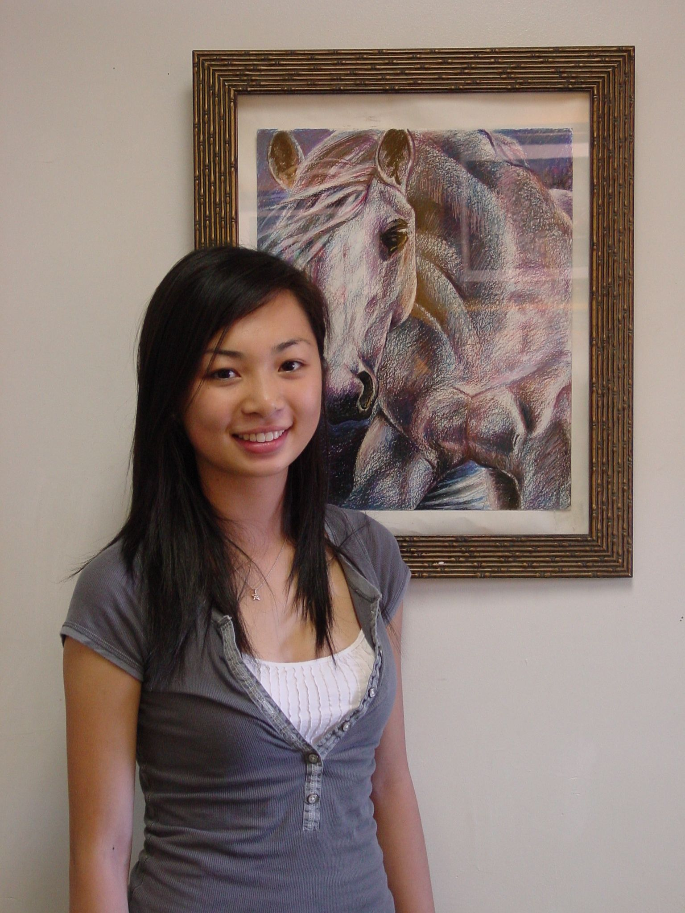
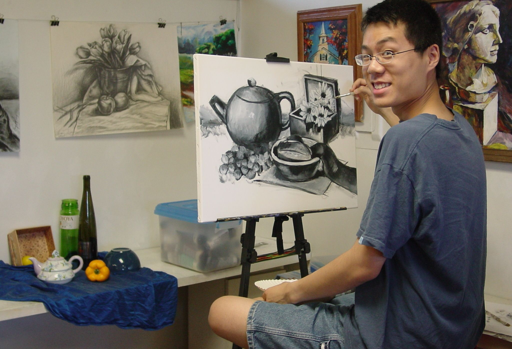

莎伦画院07大学精英榜
历年来莎伦画院学生申请全美最顶尖的美术设计院校，百分百被正式录取。莎伦画院学生在高中先修完大学美术（AP）课程及大学美术史（AP）课程百分百获得5分（满分）。有的学生申请大学就读非艺术专业，但以美术为特长，递交完整、有创意特色、基础极坚实的绘画作品及全球、全美主流重要得奖资历，得以加分，百分百读长春藤及其他名校。
在此简介07年部分入读大学的学生及作品。
翁楚璿：罗得岛美术设计学院07年新生，同时被芝加哥美术学院、纽约巴森斯服装学院等全部录取。
很多人从小有梦，但不是每个人美梦都能成真。翁楚璿（connie wen）实现了从小以来最大的梦想――被纽约巴森斯服装学院录取！该校是全美服装设计最顶尖的学院，学校并给予她优异学生奖学金。（其他录取者没有奖学金）但是她的梦想实现得比这个更大――同时被罗得岛美术设计学院（全美设计及美术综合历年来排名第一）、芝加哥美术学院（全美纯绘画排名第一）等等名校录取，同莎伦画院所有申请美术设计的学生一样，每一所名校都录取她，并给予优厚奖学金。Connie陷入艰苦的选择中……，最终选择入读罗得岛美术设计学院（简称RISD）.因为RISD不只是某些专业最顶尖，所有专业都是全美乃至全球最顶尖的，有最好的软、硬体设施及师资，师资几乎全部来自耶鲁、哈佛、“RISD”、“Art Center”这几所名校，所学内容相当丰富、课业非常繁重，并有全美最佳的校友联络网……绝非混张名校文凭找工作，而是让学生未来在专业领域中成为全美、全世界的佼佼者、领导者。在全球大企业中，若是RISD的毕业生，百分百得以最优先录用。入学极难，不少人被排在候补，但真正正式被录取者不多。莎伦学生全部被正式录取，又能取得奖学金必是优异中的优异。因为RISD对部分学生不给予奖学金。其一是家庭经济好不需奖学金较易录取，其二是相较之下成绩较弱，学校不提供奖学金。对外国学生也不提供奖学金。RISD每年并有约10％的淘汰率。
Connie在学校各门功课很优秀，所以父母迟迟才同意让她大学申请Art，学画时间很短，加上个性倔强，难以接受老师指导，学习过程甚艰难。经过严厉要求及多方沟通后，在申请大学前夕，Connie才改变学习态度，全力冲刺。时间紧迫，我们师生一同经历甘与苦的日子。因为愿意开始接受指导，Connie的内在潜质爆发一鸣惊人。我重点在帮助她克服个性中捡芝麻丟西瓜的毛病，教导她凡是首抓大要领……并发扬扩展她原本的优点。通过绘画学习，Connie的个性在短时间内发生了极大的改变，这是我最注重的方面：不仅艺术学习要达到顶峰，个性、人生观、智慧的健全可以从学画中去领悟……可惜很少有老师体会这一点，帮助学生成就他的未来，甚至帮助他改变命运，是极有意义的事，远远超过赚钱及事业扩张。Connie在学习中没少挨我的“骂”，但我很欣喜她一点点懂事成熟。有人要我介绍老师去夏令营教美术，我介绍了她并听到大家对她的赞扬。Connie其实是个很乖巧的孩子，她的执拗脾气正在改变成为学习中的执著。我将一直关注她的进步，也希望她懂得依靠上帝走过一道道险阻！圣经说：“敬畏上帝是智慧的开端。”
（在名校录取通知一份一份飞来的同时，Connie也接到AAA全美绘画大赛的得奖通知，她获得新州第一及全美第一名，赢得为数不小的一笔奖金，为她在莎伦画院学习画下完美句号。）

谢明璿：仅申请一家美术学院――全美排名第一的罗得岛美术学院，被录取。
每年夏天都是兴奋又难过的日子，又一批学生离开莎伦画院进入大学，朝夕相处的日子在分开时甚为难受，欣慰的是他们都进入理想的大学学习。“学画的孩子不会变坏”，很多学生在高中已先修大学AP Art和AP艺术史课程，百分百获得5分的满分。不少有天分的学生申请大学时没有申请Art，有些人到了大学三年级才决定转读Art，错过了申请最顶尖美术学院的机会。在美国有钱就可以上大学，因此美术设计的排行榜尤为重要，名校保证有极佳的就业优势，最顶尖的学院致力於培养全球最卓越的首席设计师及设计界领导者，例如全球几大汽车公司首席设计师全部是巴赛迪那设计学院的毕业生。
谢明璿（Rebecca）在绘画设计中没有真正用过功，很有天分的她选择学商，后来到加州探访，并通过莎伦画院在巴赛迪那设计学院（简称Art Center）及罗得岛设计学院（简称RISD）的学生多方瞭解到最顶尖设计学院学生就业出路等情况，决定在07年转校。考虑到巴赛迪那离家太远，所以她只申请一家设计学院RISD并顺利被录取。谢明璿是在RISD申请截止日期前一天才著手并完成申请作品的制作。因为原本学商的成绩非常优秀，令Rebecca再度陷入两难中，是否转入RISD专攻设计？还是在设计比较弱的综合大学同时主修商业及设计？Rebecca面临一生的选择……
日前她在华尔街兼职上班，刚上班时，主动接下公司一项设计，之前公司请人花了三个月时间才设计完成，效果却不好，Rebecca只花两个小时就完成设计，效果之好令公司上下轰动……对Rebecca来说，她只是稍露锋芒，真正本领一点都没拿出来，她与家人都归功於在莎伦画院扎实的学习。
林子尧（Allen Lin）十二岁半跟我学画至大学入学前。他取得的绘画大赛冠亚军奖，保守估计有一百多项，家中的奖杯不计其数。为了领奖，有时家人得在一天里分头两三摊赶场，奖多得无法通知媒体报道。后来干脆不领奖了，包括最近一次，再次取得美国农业部的“智慧的水”海报比赛第一名。但没有出席农业部官员特地赶来新州为莎伦画院学生举办的领奖典礼。（莎伦学生包囊全美国四个级别冠军）。Allen 已经好多年分别获该奖郡、新州、全美的冠军。
Allen曾获2001公共能源“青少年热气球海报比赛第一（弟弟林子杰获另一组别第一），2003“第34届世界儿童画展”银牌（该作品并被其所在高中选为乐队C.D封面）。04“蛋糕趣味图案设计比赛冠军，05全美“航天绘画比赛”亚军……
Allen不仅绘画是强项，其他功课也极好：他是全美国参加“国际生物奥林匹克竞赛第一名代表，并在阿根廷举行的”国际生物奥林匹克竞赛“荣获金牌。他是今年全美30万参加Ap课程考核学生中最优秀者，获得全部13门Ap大学预科考试全部满分的成绩，并获得“西门子Ap考试奖”的全国首奖，该奖只从全美国30万考生中选出男生一位、女生一位为首奖得主。他的事迹被美国英文主流媒体争相报道，并被中文报转载。他在十一年级时也获选“Government school”，该奖励是从全美十一年级学生中选出的各科最优秀者，政府给予免费夏令营授课……
Allen申请大学时，同时递交了完美的绘画作品及得奖资历，显示特长的超凡。
录取Allen 的名校有：麻省理工学院、史丹佛大学、哈佛大学、耶鲁大学、普林斯顿大学、加州理工学院等等……其中加州理工学院给予他四年20多万的全额奖学金。加州理工学院是小而精的的大学，在校生仅一千多人，在很多领域是全美第一，综合排名是全美第四。Allen 始终倾向入读麻省理工学院，现在他已是该院的新鲜人。西门子基金会主席Thomas N. Mclausland 针对Allen 等发言道：“我们希望未来从他们当中看到伟大的事情。”
莎伦学生绘画方面的成就，总是淹没了他们在其他方面的杰出，但是大学生就读非美术专业，绘画方面的成就更是为他们锦上添花。

陈迎（Ying chen）和林子尧的进取个性相反，是个追寻快乐的女孩。母亲是位长相气质都很像模特儿的年轻漂亮医生，拥有自己的诊所。在我印象中她随遇而安、淡泊名利。陈迎大概遗传了母亲的个性，竟敢在申请大学最紧张忙碌关头开始学画。“为了在进大学前圆学画的梦！”她说。看起来好玩又凡事轻松的陈迎，学画做事都很专心认真有快速果效。她只申请少少几所大学都被顺利录取。为了离家远一点，也为了让自己在经济生活等方面更加独立，她舍弃入读哥伦比亚大学，选择了全美公立大学排名第一的加州UCLA，打算将来学医。母亲对她种种决定从来不干涉。暑假一人出国漫游长久，大学入学日，不要家人相送，独自一人拖着行李到加州入学……有点紧张有些盼望。这就是陈迎，与众不同的快乐自在的小女生。也许她会像母亲一样，随遇而安，凡事不刻意，自然清新快乐恬淡中成就他人成不了的大事。
对绘画的喜爱，将伴随她一生充满蓬勃朝气。这，又是另一番人生。